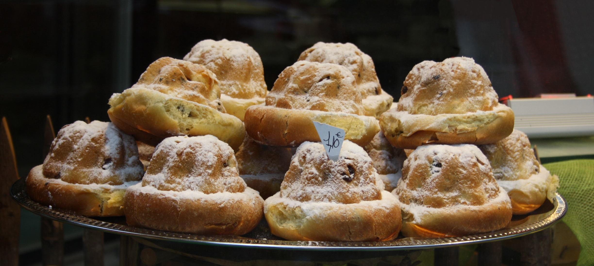

Der Gugelhupf ist ein Kuchen aus Hefeteig, oft mit Rosinen. Ursprünglich wohl in einem rundlichen Napf oder kleinen Kessel zubereitet, wird er heute in einer typischen, hohen Kranzform aus Metall, Keramik, Glas oder Silikon mit einer kaminartigen Öffnung in der Mitte gebacken, die klassischen Puddingformen ähnelt und den Teig gleichmäßiger garen lässt. Besonders in Österreich ist Gugelhupf allerdings keine Bezeichnung für einen bestimmten Teig, sondern für die charakteristische Form.

Gugelhupfverkauf in einem Geschäft in Frankreich
Die Form allein macht noch keinen Gugelhupf! Wie meine Mutter so gerne sagte:
Die Form allein macht noch keinen Gugelhupf! Es ist nur das Original, wenn es aus Hefeteig ist!
Das Ergebnis ist dann ein lockerer Kuchen mit ausgesprochen feiner Kruste, ideal auch für alle, die einen weniger “süßen Zahn” haben.
Schwierigkeitsgrad
mittel
Zubereitungszeit
2–3 Stunden
Utensilien
Gugelhupf-Form, Durchmesser zirka 25 Zentimeter
Speiseöl (ideal Sonnenblumenöl) zum Fetten der Form
Mandeln zum Auslegen der Form (zirka 25 Stück)
Einkaufsliste
Für den Vorteig:
100 g Mehl
70 g Milch
6 g Hefe
Für den Hauptteig:
150 g Mehl
35 g Zucker
5 g Salz
14 g Hefe
2 Eier
100 g Butter, zimmerwarm
Für die Füllung:
100 g Sultaninen
25 g Rum
Für die Dekoration:
100 g Butter
Zucker
Zimt
Zubereitung
Wert
Einheit
Ruhezeit für den Teig
Insgesamt ca. 1 Stunde
Backzeit
ca. 35 Minuten
Backtemperatur
180 Grad (mittlere Schiene, Ober-/Unterhitze)
Backofen auf 180°C vorheizen
Die Backform mit dem Pinsel einfetten und leicht mit Mehl bestäuben
Die flüssigen Zutaten in einer Rührschüssel verrühren
Die trockenen Zutaten abmessen und in die 2. Rührschüssel geben und gut! mischen.
Die Butter in kleine Stücke schneiden und in die 2. Rührschüssel geben.
Die Hälfte der Eiermischung (1. Rührschüssel) in die 2. Rührschüssel schütten und mit dem Handmixer 1 Minute lang rühren.
Den Rest der Eiermischung dazugeben und weiterrühren
Den Teig in die Backform geben
Kuchen 55 min backen. Garprobe machen
Kuchen 10 min in der Backform abkühlen lassen dann aus der Backform nehmen
Zitronen auspressen
Zitronensaft und Zucker in den kleinen Topf geben und leicht aufkochen lassen